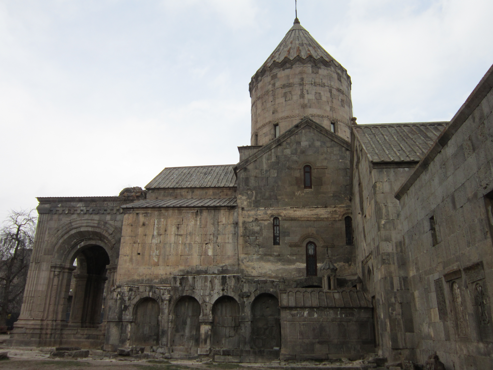
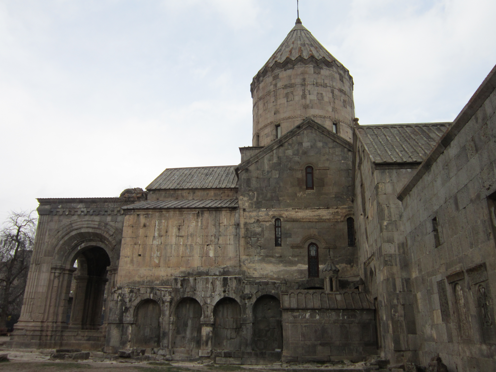

Տաթև
(Տաթևի վանք)
.jpg)
Տաթևի վանք, միջնադարյան վանական համալիր Հայաստանում։ Գտնվում է Սյունիքի մարզի Տաթև գյուղի հարավում՝ Որոտան գետի վտակի ձորի աջափնյա եզերքին։ Ավանդության համաձայն՝ վանքը կոչվել է Թադեոս առաքյալի աշակերտ Եվստաթեոսի անունով։
Ըստ Ստեփանոս Օրբելյանի, ով հեղինակել է «Սիսական նահանգի պատմություն» աշխատությունը, Տաթևի վանքի առաջին եկեղեցին կառուցվել է 4-րդ դարում, ունեցել անշուք տեսք, սակավաթիվ ճգնավոր միաբաններ։ 8-րդ դարի վերջին եղել է Սյունյաց եպիսկոպոսության աթոռանիստը։ Այստեղ են բերվել Քրիստոսի խաչափայտի մասունքով արծաթե հսկա (մարդաչափ) «Բաբկենյան խաչը» (պատրաստել էր Բաբիկ իշխանի որդի Վասակը), Բյուզանդիայից՝ «Աստվածամուխ սուրբ Նշանը», սուրբ Հովհաննեսի, սուրբ Ստեփանոս Նախավկայի, տասնմեկ առաքյալների, սուրբ Գրիգոր Ա Լուսավորչի, սուրբ Հռիփսիմեի մասունքները, Աստվածածնի մազերը։
Կալվածքներ գնելու և նվիրատվությունների շնորհիվ վանքը դարձել է խոշոր ավատատեր։ 848 թվականին իշխան Փիլիպե Սյունին կառուցել է սուրբ Գրիգոր Լուսավորիչ եկեղեցին։ Սյունյաց գահերեց իշխան Աշոտ Սյունու պատվերով Հովհաննես եպիսկոպոսը ձեռնարկել է հայկական ամենախոշոր եկեղեցիներից մեկի՝ սուրբ Պողոս-Պետրոս տաճարի կառուցումը, ինչին օժանդակել է Շուշանիկ տիկինը։ Տաճարի հիմքը դրվել է 895 թվականին, շինարարությունն ավարտվել 906 թվականին։ Օծմանը ներկա են եղել Սմբատ Ա թագավորը, Վասպուրականի Գագիկ Արծրունի իշխանը, կաթողիկոս Հովհաննես Ե Դրասխանակերտցին, Աղվանից Սիմոն Բ կաթողիկոսը, հոգևոր ու ազնվական դասի ներկայացուցիչներ։ Բացվում է Տաթևի մատենադարանը։
Սյունիքի թագավորության (987-1170) անկումից հետո Տաթևի վանքը որոշ ժամանակով ամայացել է, իսկ հոգևորականները տեղափոխվել են Նորավանք։ Կարճ ժամանակ անց Վրաց թագավորության զորքերի գլուխ անցած՝ Զաքարե ամիրսպասալար և Իվանե աթաբեկ Զաքարյանները ազատագրում են հյուսիսարևելյան Հայաստանը։ Սյունիքը, Արցախը, Այրարատը, Ուտիքի ու Գուգարքի մի մասը մտնում են Զաքարյան իշխանապետության կազմի մեջ։ Սյունիքի իշխաններ Օրբելյանները խթանում են վանքի հետագա զարգացումը։ 14-րդ դարում հիմնադրվում է Տաթևի համալսարանը, որը դառնում է գիտության խոշոր կենտրոն։ Դրան կից բացվում է Տաթևի մանրանկարչության դպրոցը։
Ուշ միջնադարում և նոր ժամանակներում Տաթևի պարսպապատ վանքը ու նրան կից նորաբաց Տաթևի անապատը ունեցել են կարևոր ռազմավարական նշանակություն։ 1722-30 թվականներին Տաթևը եղել է Սյունիքի ազատագրական պայքարի, 1919-21 թվականներին՝ Զանգեզուրի ինքնապաշտպանության կարևոր օջախներից մեկը։ 1931 թվականին տեղի ունեցած երկրաշարժի հետևանքով եկեղեցական համալիրը գրեթե ամբողջությամբ ավերվել է, գետնին է հավասարվել Տաթևի համալսարանը, հողով ծածկվել վանքի մուտքը։ 1974-1998 թվականներին վանական համալիրի մեծ մասը վերականգնվել է. կիսակառույց են շարունակում մնալ զանգակատունը և հարակից մի քանի կառույցներ, այդ թվում՝ պարիսպների մի մասը։
2010 թվականին շահագործման է հանձնվում աշխարհի ամենաերկար հետադարձելի՝ ՏաԹևեր ճոպանուղին (5.7 կմ), որը նպաստում է տարածաշրջանի զբոսաշրջության զարգացմանը։
Տաթևի վանքի վերականգնումը, վանական կյանքի վերածնունդը և վանքի կրթական նշանակության վերականգնումը «Տաթևի Վերածնունդ» նախագծի հիմնական նպատակներից է, որի մի մասն է կազմում նաև «ՏաԹևեր» ճոպանուղին։
Անվանում
Տաթևի վանքի անվան հետ կապված կա երկու տարբերակ։ Դրանցից մեկի համաձայն, «Տաթև» անունը ծագում է հայերեն «տա թև» արտահայտությունից։
Կառուցումն ավարտելուց հետո, քարագործ Վարպետը, դիմելով ցածրում գտնվող բանվորներին, երկու տաշեղ է պահանջում։ Ստանալով տաշեղները վարպետը համբուրում է դրանք և ասում՝ «Հոգին սուրբ տա թև»։ Խոսքը բերանին, նրա ուսերին թևեր են բուսնում։ Վարպետը թռչում, գնում է անհայտ ուղղությամբ։ Բանվորներն առանց վարպետի չեն կարողանում հանել վանքի փայտյա սկալաները։ Ժամանակ անց, լսելով, որ նա Պոլսում է գտնվում, վանքի շրջակայքի բնակիչները մարդ են ուղարկում վարպետի մոտ և խնդրում, որ նա գա հանի վանքի սկալաները։ Սակայն վարպետը չի վերադառնում։ Միայն հայտնում է հանելու եղանակը։ Վարպետի ասած խոսքից «Հոգին սուրբ տա թև» վանքը կոչվում է Տաթև:
Երկորրդ տարբերակի համաձայն՝ վանքը կոչվել է Թադեոս առաքյալի աշակերտ Եվստաթեոսի անունով։ Նա այս վայրերում տանջամահ է եղել, իսկ 4-րդ դարում իր գերեզմանի վրա կառուցվել է եկեղեցի, որն օծել է սուրբ Գրիգոր Լուսավորիչը։ Բերդի պարիսպների ետևում պահպանվել են եկեղեցու ավերակները, որոնք հեռու չեն Տաթևի վանքին։
Ավանդություն
Լենկ Թեմուրը կամեցել է հիմնահատակ կործանել Տաթևի վանքը և արմատախիլ անել նրա մոտ գտնվող շարժական Գավազան սյունը։ Դրա համար նա հրամայել է իր հրոսակներին լծել զույգ գոմեշ, գութանի շղթայով կապել սյունը և ձգել։ Հենց որ գոմեշները սկսում են ձգել, շղթան կտրվում է և նրանք տապալվում են ձորը։ Տեսնելով այդ՝ Լենկ Թեմուրը հեռանում է Տաթևից։
Գալով Տաթև՝ Լենկ-Թեմուրը կարգադրում է փայտ դիզել վանքի մեջ և այրել։ Կրակը ընկնում է նաև զանգակատունը և փչացնում զանգերը։ Դրանից հետո վանքի զանգերի ձայնը խզվում է։
Պատմություն
(Տաթևի Վանք, Սյունիքի մարզ, Հայաստան)
Վաղ միջնադար:
Սյունիք նահանգ
Մեծ Հայք Մեծ Հայքի թագավորություն
Տաթևի վանքը եղել է հոգևոր-մշակութային կենտրոն, խոշոր վանական կալվածատիրական հաստատություն Մեծ Հայքի թագավորության Սյունիք աշխարհ-նահանգի Ծղուկք գավառում (այժմ՝ Սյունիքի մարզի Տաթև գյուղում)։ Հայաստանում ավատատիրական կարգերի հաստատումից հետո նահանգի ժառանգական կառավարումը հանձնվում է Արշակունի արքայական ընտանիքին առավել մոտ կանգնած հզոր իշխանական տան՝ Սյունիներին։ Վերջինիս գերիշխանության տակ էին ոչ միայն Սյունիքի բարձրավանդակն ու Զանգեզուրի լեռնաշղթան (այժմ՝ ՀՀ Սյունիքի մարզ), այլև Վայոց ձոր և Գեղարքունիք գավառները։ Սյունի իշխանները ձեռնամուխ են լինում բազմաթիվ վանքերի ու եկեղեցիների կառուցման, դրանք շրջապատում պարիսպներով։
Վանական համալիրի առաջին շինությունները կառուցվել են 4-րդ դարում, երբ Հայաստանում քրիստոնեությունն ընդունվել է պետական պաշտոնական կրոն։ 387 թվականին տեղի է ունենում Հայաստանի առաջին բաժանումը, իսկ ավելի ուշ Հայաստանը վերածվում է պարսկական մարզպանության (428)։ Վաղ միջնադարում, երբ արևելյան Հայաստանը գտնվել է պարսկական տիրապետության ներքո, Տաթևի վանքը եղել է դպրության առաջնակարգ կենտրոն։ 701 թվականին Հայաստանը, Վրաստանը ու Աղվանքը մտնում են Արաբական խալիֆայության կազմ՝ որպես վարչաքաղաքական մեկ միավոր՝ Արմինիա կուսակալություն։ Նույն դարի վերջից Տաթևի վանքը դառնում է Սյունյաց եպիսկոպոսության աթոռանիստը։
Զարգացած միջնադար:
Տաթևի վանքի տարածքը 9-րդ դարում արդեն չի բավարարել Սյունյաց եպիսկոպոսական աթոռի պահանջները։
839 թվականին Դավիթ եպիսկոպոսը Սյունյաց Փիլիպե իշխանից գնել է վանքի շրջակայքի «Արծիվ» կոչված տարածքը։ 844 թվականին նա նույն իշխանից նվեր է ընդունել Տաթև գյուղը, որտեղ և հիմնադրել է հետագայում հռչակ ստացած վանքը։ Կալվածքներ գնելու և նվիրատվությունների շնորհիվ վանքը դարձել է խոշոր ավատատեր։ 844 թվականին Կովսական գավառի իշխան Հրահատը Տաթևի վանքին է նվիրել Նորաշենիկ գյուղը, 848 թվականին իշխան Փիլիպեն կառուցել է սուրբ Գրիգոր Լուսավորիչ եկեղեցին։ 881 թվականին վանահայր Սողոմոն եպիսկոպոսը գնել է Դարատափ գյուղը, վանքին վերադարձրել Խոտ գյուղը և սուրբ Նշանի համար ճարտար վարպետների ձեռքով պատրաստել թանկ արժեք քարերով զարդարված ոսկե խաչ։
սուրբ Գրիգոր Լուսավորիչ եկեղեցի
Սյունյաց գահերեց իշխան Աշոտ Սյունու և Շուշանիկ տիկնոջ պատվերով Հովհաննես եպիսկոպոսը ձեռնարկել է հայկական ամենախոշոր եկեղեցիներից մեկի՝ սուրբ Պողոս-Պետրոս տաճարի կառուցումը։ Տաճարի հիմքը դրվել է 895 թվականին, շինարարությունն ավարտվել 906 թվականին։ Սրբատաշ բազալտից կառուցված տաճարի գմբեթը հենվում է երկու խոշոր մույթերի և արևմտյան ավանդատների անկյունների վրա։ Մույթերը խորհրդանշում են Պողոս և Պետրոս առաքյալներին, որոնց մասունքները դրվել են մույթերի հիմքերում և անկյուններում։
Սուրբ Պողոս-Պետրոս տաճար
Հովհաննես եպիսկոպոսը սուրբ Պողոս-Պետրոս տաճարի կառուցումը նշանավորել է նրա հարավային մուտքի դիմաց սուրբ Երրորդությանը նվիրված հուշասյուն կանգնեցնելով (կոչվել է «Գավազան»), որը շարնիրային սկզբունքով իրականացված հիմքի շնորհիվ ճոճվել է Տաթևի վանքը պարսպապատվել է, թեք տեղանքը բարձր հենապատերի միջոցով հարթվել, կառուցվել են թաքստոցներ, նկուղներ, դեպի բակը բացվող խցեր, սեղանատուն, արհեստանոցներ, մթերանոցներ, գրատուն, տաճարի առջև՝ գավիթ (որպես աղոթատեղի) և Սյունյաց իշխանների տապանատուն։ 9-րդ դարում Տաթևի վանքը Բագրատունյաց Հայաստանի ամենախոշոր ու նշանավոր վանքն էր. ունեցել է շուրջ 500 միաբան, վարդապետարան։ Վանքում աշխատել, ստեղծագործել են փիլիսոփաներ, երաժիշտներ, մանրանկարիչներ, գրիչներ։
918 թվականին Հովհաննես եպիսկոպոսը վախճանվել է (թաղվել է Տաթևի վանքի բակում), և Հովհաննես Ե Դրասխանակերտցին Սյունյաց եպիսկոպոս է նշանակել Հակոբ Դվինեցուն, որը շարունակել է Տաթևի վանքի կալվածքների ընդլայնման գործը։ Հակոբ եպիսկոպոսը 932 թվականին գնել է Վարարակ գետի ջուրը, կառուցել երկար ջրանցք՝ մինչև վանքի մոտ գտնվող Ցաքուտ ամայի վայրը, և այն մշակելի դարձրել։
Տնտեսապես հզորանալով՝ Տաթևի եպիսկոպոսությունը 940-950-ական թվականներին փորձել է անկախանալ Հայոց հայրապետական աթոռից։ Ի պատասխան Հակոբ եպիսկոպոսի անջատողական գործողությունների՝ կաթողիկոս Անանիա Ա Մոկացին բանադրել է նրան։ Օգտվելով դրանից՝ Գեղարքունիքի, Երնջակի, Գողթնի հոգևոր առաջնորդները հրաժարվել են ճանաչել Տաթևի վանքի գերագահությունը և հիմնել են առանձին եպիսկոպոսություններ, իսկ աշխարհիկ իշխանները տիրացել են վանքի կալվածքների մեծ մասին։ 958 թվականին եպիսկոպոս ընտրված Վահան Սյունեցուն (968-969 թվականներին՝ կաթողիկոս Վահան Ա Սյունեցի) հաջողվել է մասամբ վերականգնել Տաթևի վանքի իրավունքներն ու կալվածքները։ Ավելի ուշ հիմնադրվում է Սյունիքի թագավորությունը (987-1170), և Տաթևի դերն ու նշանակությունը ավելիէ բարձրանում։
սուրբ Աստվածածին եկեղեցի
11-րդ դարում Ցուրաբերդի բնակիչները վերսկսել են իրենց պայքարը Տաթևի վանքի դեմ։ 1003 թվականին ապստամբ գյուղացիները սպանել են եպիսկոպոսին, ինչի համար Սյունյաց Վասակ Ա թագավորը հիմնահատակ ավերել է Ցուրաբերդը։ 1006 թվականին կաթողիկոս Սարգիս Ա Սևանցու շրջաբերականով Տաթևի եպիսկոպոսությանն են վերադարձվել նրա նախկին բոլոր վիճակները։ 1043 թվականին Հովհաննես եպիսկոպոսը կառուցել է սուրբ Պողոս-Պետրոս տաճարին հարավից կից սրահը։ 1044 թվականին հարևան ամիրայությունների զորքերը հարձակվել են Տաթևի վանքի վրա, սպանել միաբաններին, կողոպտել վանքը, հրկիզել ու ավերել սուրբ Գրիգոր Լուսավորիչ եկեղեցին, բնակելի շենքերը, արհեստանոցները, որոնք շուտով վերականգնվել են։ 1046 թվականին Հովհաննես եպիսկոպոսը Սյունյաց Սմբատ Բ թագավորի օժանդակությամբ վերակառուցել է սուրբ Գրիգոր Լուսավորիչ եկեղեցին՝ որմնասյան վերևում ագուցելով Գրիգոր Ա Լուսավորչի մասունքը։ Նրա հաջորդը՝ Գրիգոր եպիսկոպոսը, 1087 թվականին կառուցել է գավիթներ, հովանոցներ, վանքի դարպասը՝ վրան կենտրոնագմբեթ սուրբ Աստվածածին եկեղեցին, Սյունյաց Սենեքերիմ Ա թագավորի հրամանով հետ ստացել Տաթևի վանքից խլված կալվածքները։
1138 թվականի երկրաշարժից ընկել է Տաթևի վանքի սուրբ Պողոս-Պետրոս տաճարի գմբեթը, ավերվել սուրբ Գրիգոր Լուսավորիչ եկեղեցին։ 1170 թվականին, երբ սելջուկ-թուրքերը գրավել են Բաղաբերդը և կործանել Սյունիքի թագավորությունը, կողոպտել են Տաթևի եպիսկոպոսարանի գանձերը, այրել 10 000-ի հասնող ձեռագրերը, երկիրն ավերակ ու անմարդաբնակ դարձրել։ Ամայացել է նաև Տաթևի վանքը։ Նրա առաջնորդները տեղափոխվել են Վայոց ձորի Նորավանքը։ 1216 թվականին այնտեղ եպիսկոպոսություն է հիմնվել, և Սյունյաց աթոռը տրոհվել է երկու մասի։ 1261 թվականին Սմբատ և Տարսայիճ Օրբելյանները նորոգել ու բարեկարգել են Տաթևի վանքը։ 1273 թվականին Տարսայիճ Օրբելյանը սուրբ Պողոս-Պետրոս տաճարին է նվիրել թանկարժեք սպասք, հանդերձանք, Տաթևի վանքին վերադարձրել նրա նախկին տիրույթները։ 1270-ական թվականներին Հայրապետ եպիսկոպոսը նորոգել է սուրբ Պողոս Պետրոս տաճարի ծածկերը և տանիքը։ 1282 թվականին մեկնել է Կիլիկիա և Լևոն Գ թագավորից վանքի համար բերել բյուզանդական արքունական մետաքսից գործված և շքեղ զարդարված եկեղեցական հանդերձանք, թանկարժեք սկիհներ, խաչեր և այլ նվերներ։
Հովհան Որոտնեցի և Գրիգոր Տաթևացի
Տաթևի վանքը վերստին հզորացել է, երբ 1286 թվականին Կիլիկիայում Կոստանդին Բ Կատուկեցի կաթողիկոսը Ստեփանոս արքեպիսկոպոս Օրբելյանին օծել է Սյունյաց աթոռի մետրոպոլիտ և հայոց պրոտոֆրոնտ ես (նախաթոռ եպիսկոպոս)։ Նա միավորել է Սյունյաց տարանջատված եպիսկոպոսարանները, մեկնել Մոնղոլիա՝ Արղունխանի մոտ և հաստատել Տաթևի վանքի գերագահությունը Սյունիքի բոլոր թեմերի նկատմամբ։ 1295 թվականին Ստեփանոս արքեպիսկոպոս Օրբելյանը հիմնովին վերակառուցել է երկրաշարժից ավերված սուրբ Գրիգոր Լուսավորիչ եկեղեցին և Տաթևի վանքին նվիրել սեփական Արիտ գյուղը, 1297 թվականին վանքում ավարտել է «Պատմութիւն նահանգին Սիսական» աշխատությունը։ 1302 և 1304 թվականներին արքեպիսկոպոսի պատվերով Տաթևի վանքի համար ձուլվել են երկու խոշոր պղնձե զանգեր։ 13-րդ դարի վերջին վանքը դարձել է ունիթորության դեմ մղվող պաքարի կենտրոն։ 14-րդ դարում Տաթևի վանքը գիտամշակութային վերելք է ապրել։ Այստեղ են հավաքվել ժամանակի աչքի ընկնող աստվածաբաններ, փիլիսոփաներ, աստղագետներ, տրամաբաններ, երաժիշտներ, նկարիչներ։ Կրոնավորների թիվը գնալով մեծացել է՝ հասել մոտ 1000-ի։ Վերակառուցվել է վանական կրթարանը, 895 թվականին հիմնված վարդապետարանը դարձել է համահայկական մշակութային կենտրոն, հիմք է դրվել նոր, բարձր տիպի դպրոցի՝ Տաթևի համալսարանի։ Վանքին կից 10-րդ դարում գործել է Տաթևի մատենադարանը, որը համալսարանի գոյության տարիներին հարստացել է և գոյատևել մինչև 1911-12 թվականները, իսկ ավերից ու ավարառություններից փրկված 140 ձեռագիր մատյաններ տեղափոխվել են Էջմիածին, ապա՝ Երևանի Մատենադարան։ Համալսարանին կից գործել է մանրանկարչության դպրոց։
13-14-րդ դարերում Տաթևի վանքի եպիսկոպոսությունն ուներ 677 հարկատու գյուղեր՝ իր թեմում գտնվող 14 գավառներում (Ծղուկ, Եվայլախ, Վայոց ձոր, Գեղարքունի, Սոթք, Աղահեճ, Հաբանդ, Բաղք, Քաշունիք, Կովսական, Արևիք, Ձորք, Երնջակ, Ճահուկ), բազմաթիվ վանքեր։
14-րդ դարում Հովհան Որոտնեցին Տաթևի վանքի գավթի վրա կառուցել է կամարակապ, երկհարկանի զանգակատուն։ 1381-87 թվականներին Լենկթեմուրի՝ Սյունիք կատարած արշավանքի ժամանակ վանքը կողոպտվել է, հրկիզվել, կորցրել կալվածքների մեծ մասը։ 1434 թվականի թեմուրյան գահակալ Շահռուխի ասպատակությունից հետո Շմավոն եպիսկոպոսը միաբանների հետ տեղափոխվել է Սանահինի վանք։
Ուշ միջնադար:
Տաթևի վանքը վերստին բարգավաճել է ուշ միջնադարում՝ 17-18-րդ դարերում, երբ իշխանական ու հոգևորական դասի հզորացումը խթանում է հայկական կարևոր կենտրոնների բարգավաճումը։ Ավելի ուշ ազատագրական պայքար է սկսվում Սյունիքում (1722-1730) և Արցախում (1724-1731)։ Առավել հիշարժան իրադարձություններ են՝
Գրիգոր Տաթևացու գերեզմանը Տաթևում
Առաքել եպիսկոպոսը կառուցել է վանքի հարավային կողմի գավիթը, գիտնական Գրիգոր Տաթևացու հիշատակին խաչքար կերտել
Սիմեոն եպիսկոպոս Անգեղակոթցին Պարսից շահից հետ է ստացել Տաթևի վանքից խլված կալվածքները
Հովհաննես եպիսկոպոս Շինաթաղցին բազմիցս մեկնել է Սպահան՝ պարսից Հուսեյն շահի մոտ և վերահաստատել Տաթևի վանքի իրավունքները կալվածքների նկատմամբ, կառուցել արևելյան դահլիճը, սրբատաշ քարից սենյակներ
Ներսես եպիսկոպոսը բարեկարգել է վանքը, 1646 թվականին կառուցել արևմտյան խցերը և Տաթև գյուղի սուրբ Ներսես եկեղեցին
Զաքարիա եպիսկոպոսը կառուցել է առաջնորդարանի շենքը, իսկ 1671 թվականին՝ բնակելի սենյակներ
Կիրակոս Աղուերձեցին նորոգել է սուրբ Պողոս-Պետրոս տաճարի գմբեթը և վանքի պարիսպը
1705 թվականին Խոջա Անտոնի միջոցներով Տեր Միքայելը նորոգել է տաճարը
Հովհաննես Ղալամյանցը նորոգել է վանքի շենքերը, եկեղեցիների տանիքները, կառուցել տնտեսական շինություններ և 1745 թվականին՝ Տաթև գյուղի աղբյուրը
Մինաս Շինաթաղցին նորոգել է վանքի պարիսպը, կառուցել սեղանատուն, խոհանոց, հացատուն
Աբրահամ Աստապատեցին 18-րդ երկրորդ քառորդին Տաթևի վանքում դպրոց է բացել, որ գործել է մինչև 20-րդ դարը, համալիրի հյուսիսարևելյան կողմում կառուցել 16 դասասենյակով դպրոցի շենք
Հովակիմ արքեպիսկոպոսը 1787 թվականին տաճարի հարավային մուտքի առջև կառուցել է Գրիգոր Տաթևացու դամբարանը, հյուսիսային պարսպի բուրգերը, բնակելի սենյակներ, ձիթհանքի շենք և այլն։ 1796 և 1826 թվականներին վանքն ասպատակել են պարսկական զորքերը և կողոպտել վանական համալիրը։
Նոր ժամանակներ: 1801 թվականին Արևելյան Վրաստանը (Քարթլի-Կախեթի թագավորություն), համաձայն թագավոր Գեորգի XII-ի կտակի, միացվում է Ռուսական կայսրությանը։ Դրանից հետո տեղի են ունենում երկու՝ առաջին (1804-1813) և երկրորդ (1826-1828) ռուս-պարսկական պատերազմները։ 1813 թվականին կնքված Գյուլիստանի պայմանագրով ամրագրվում է Արևելյան Հայաստանի գավառների մեծ մասի՝ Գուգարքի, Ուտիքի, Արցախի և Սյունիք նահանգի մեծ մասի անցումը ռուսական տիրապետության ներքո։ Տաթևի վանքը, այդպիսով, պարսկական լծից ազատագրվում է այդ ժամանակ։ 15 տարի անց կնքված Թուրքմենչայի պայմանագրով հաստատվում է նախորդ հաշտության պայմանագիրը, և Արևելյան Հայաստանն անցնում է Ռուսական կայսրությանը։ Տաթևի վանքը Զանգեզուրի երկրաշարժից (1931) առաջ և հետո 1828 թվականին Տաթևի վանքի վանահայր Մարտիրոս եպիսկոպոսը ռուսական իշխանությունների միջոցով վերադարձրել է վանքից խլված կալվածքները, հիմնովին նորոգել Տաթևի վանքային համալիրը, Տաթև գյուղի ճանապարհը, Կաքավասարից ջուր անցկացրել, տնտեսական նոր շենքեր կառուցել։ 1837 թվականին Տաթևի վանքի մետրոպոլիտությունը վերացվել է, և Սյունիքը կազմել է Երևանի թեմի մի մասը։ 1858 թվականին Տաթևի վանքը ունեցել է 70 հարկատու գյուղեր, 1898 թվականին՝ 15 գյուղ և 5 միաբան։ 1862 թվականին սուրբ Պողոս-Պետրոս տաճարի արևելյան կողմը նորոգել է Հովհաննես արքեպիսկոպոս Ասլանյանը, 1865 թվականին վանքի հսուրբ կողմի շենքերը՝ վանահայր Սարգիս Գասպարյանցը։ 19-րդ դարի վերջին քանդել են վանքի գավիթն ու զանգակատունը և 20-րդ դարի սկզբին, տաճարի արևմտյան ճակատին կից, կառուցել բարձր, եռահարկ, քանդակազարդ զանգակատուն։ Առաջին համաշխարհային պատերազմի ընթացքում՝ 1917 թվականին, տեղի են ունենում Փետրվարյան և Հոկտեմբերյան հեղափոխությունները։ Դրա արդյունքում Ռուսաստանը պարտություն է կրում բոլոր ճակատներում, իսկ Անդրկովկասը աստիճանաբար սկսում է անկախանալ։ Քաղաքացիական կռիվների արդյունքում 1917 թվականի մարտին հիմնված Անդկովկասյան Հատուկ Կոմիտեն (1917 նոյեմբերից՝ Անդրկովկասյան կոմիսարիատ) բաժանման ու անկախացման ճանապարհին է կանգնում։ Դրան գումարվում է նաև 1917 թվականի դեկտեմբերին Երզնկայի զինադադարը խախտած օսմանյան զորքերի հարձակումը. թուրքերի դեմ պայքարելու ցանկություն չունենալով՝ Կայզերական Գերմանիայի աջակցությամբ 1918 թվականի մայիսի 28-ին իր անկախությունն է հռչակում Վրաստանի Դեմոկրատական Հանրապետությունը։ Դրան հաջորդում է մինչ այդ գոյություն չունեցած մի պետության՝ Մուսավաթական Ադրբեջանի ստեղծումը Օսմանյան կայսրության օժանդակությամբ, որը Հարավային Կովկասի մուսուլմանների միության ձև էր՝ բաղկացած Ռուսական կայսրության Բաքվի և Ելիզավետպոլի նահանգներից։ Դրան հաջորդում է հայոց պետականության վերականգնումը։ Հայ-ադրբեջանական հարաբերությունները ի սկզբանե լարված էին՝ կապված այն փաստի հետ, որ հայկական Ղարաբաղը, Զանգեզուրը ու Նախիջևանը մուսուլմանները ցանկանում էին ներառել իրենց սահմաններում։ 1919-21 թվականների Զանգեզուրի ինքնապաշտպանությունը ղեկավարում է Գարեգին Նժդեհը։ Պայքարի ակտիվ կենտրոններից մեկն է դառնում Տաթևի վանքը։ Տաթևը Լեռնահայաստանի քարտեզի վրա 1920 թվականի դեկտեմբերի 25-ին, երբ Դաշնակցություն կուսակցությունը մոտ մեկ ամիս վայր էր դրել իր իշխանությունը և Հայաստանում հաստատվել էին խորհրդային կարգեր, Տաթևի վանքում հրավիրվեց համազանգեզուրյան առաջին համագումարը, որը երկրամասը կոչեց «Լեռնահայաստան»։ Հայաստանի խորհրդայնացման ընթացքը հեշտացնելու նպատակով նոյեմբերի 30-ին Ադրբեջանի հեղկոմի ղեկավար Նարիման Նարիմանովը հայտարարեց Նախիջևանից, Զանգեզուրից և Լեռնային Ղարաբաղից հօգուտ Խորհրդային Հայաստանի հրաժարվելու մասին։ Համագումարի ընթացքում սակայն, որոշվեց Զանգեզուրը ժամանակավորապես հռչակել անկախ պետություն, մինչև պարզ կդառնար Հայաստանին միանալու հնարավորությունը։ Սպարապետ դարձավ Գարեգին Նժդեհը։ 1921 թվականի ապրիլի 27-ին՝ անհաջող փետրվարյան ապստամբությունից հետո դարձյալ Տաթևի վանքում կայացավ համազանգեզուրյան երկրորդ համագումարը, որը երկրամասը կոչեց «Հայաստանի Հանրապետություն»՝ հակադրվելով Խորհրդային Հայաստանին։ 1931 թվականի Զանգեզուրի երկրաշարժից հետո Տաթևի վանքը երկրաշարժից ավերվել է, քանդվել են սուրբ Գրիգոր Լուսավորիչ և սուրբ Աստվածածին եկեղեցիները, տաճարի գմբեթը, զանգակատունը, սյունասրահը։ Երկար տարիներ՝ խորհրդային իշխանության տարիներին, վանական համալիրը մնացել է լքված՝ անուշադրության մատնված լինելով իշխանությունների կողմից։ 1960-ականների ազգային վերածնունդից հետո՝ 1974 թվականից սկսած, վերակառուցվել են գրեթե բոլոր եկեղեցիները, տաճարի գմբեթը, նորոգվել բնակելի և տնտեսական շենքերը, պարիսպի մեծ մասը, զանգակատան առաջին հարկը։
Շինություններ
.png)
Տաթևի համալիրը մեծ տարածություն է գրավում։ Տաթև և Որոտան գետերի կիրճերի միջև եռանկյունաձև ձգվում է ժայռեղեն մի թերակղզի, որի վրա կառուցված է վանքը։ Զառիթափ ժայռերի բարձրությունը հասնում է 700-800 մետրի։ Մյուս կողմերից վանքը շրջապատված է աշտարակներով և հաստ պարսպապատերով՝ լուսամուտների նեղ բացվածքներով։ Համալիրը ներկայացնում են պարսպատերերը, ձիթհանը, սուրբ Պողոս-Պետրոս տաճարը, սուրբ Աստվածածին մատուռ-եկեղեցին, սուրբ Գրիգոր եկեղեցին, սուրբ Գրիգոր Տաթևացու դամբարանը, «Գավազան» հուշարձանը, սեղանատունը, դասասենյակները, մատենադարանը, ուխտագնացների հյուրատունը, բնակելի տարածքները, խոհանոցը, բազմաթիվ ծառայողական շինությունները և վանական խցերը։
Եկեղեցիներ ու վանքեր
Տաթևի վանական համալիրի պահպանված հնագույն կառույցը Պողոս-Պետրոս տաճարն է։ Այն հիմնադրվել է 895 թվականին Հովհաննես եպիսկոպոսի նախաձեռնությամբ, Սյունյաց գահերեց իշխան Աշոտի և իշխաններ Գրիգոր Սուփանի ու Ձագիկի նյութական օժանդակությամբ, շինարարությունն ավարտվել է 906 թվականին։
Ս Պողոս-Պետրոս եկեղեցու հատակագիծ (895-906)
Տաճարը ճարտարապետական հորինվածքով արևմուտքից արևելք ձգված ուղղանկյուն դահլիճ է, արևելքում աբսիդով և նրան հարող զույգ ավանդատներով։ Արևելյան ճակատը մասնատված է խոր խորշերով, որոնցից վերև տեղավորված են Աշոտ Սյունի գահերեց իշխանի և նրա կնոջ՝ իշխանուհի Շուշանի դիմաքանդակները։ Նրանցից աջ և ձախ, խորշերի պսակների մեջ վիշապ օձերի, այլ ավանդական պահպանիչ էակների քանդակներ են։ Տաճարի պատերը 930 թվականին ծածկվել են հարուստ որմնանկարներով, որոնցից այժմ քիչ բան է պահպանվել։ Տաճարի գլխավոր աբսիդում պատկերված է եղել գահի վրա նստած Քրիստոսը, ավելի ցած՝ առաքյալներ և սրբեր։ Արևմտյան պատի վրա մնացել են ահեղ դատաստանի մեծ կոմպոզիցիայի մնացորդները, իսկ հյուսիսային պատին ծննդյան սյուժեի հետ առնչվող տեսարաններ։
Տաթևի վանքի սուրբ Պողոս-Պետրոս տաճարում պահպանվել է 10-րդ դարի որմնանկարչական ամբողջական հարդարանքը, որը պատկերացում է տալիս վաղմիջնադարյան հայ եկեղեցական նկարազարդման համակարգի մասին։ Պատկերներն արվել են ֆրեսկո տեխնիկայով, հայկական որմնանկարչությանը հատուկ 3-4 մմ հաստության սվաղի վրա՝ տեղական բնական հանքաներկերով, մասնավորապես՝ լաջվարդով։ Խորանի կոնքում պատկերված է եղել «Քրիստոսը Փառքի մեջ» տեսարանը։ Կոր պատի վրա երեք նախշերիզված շարքերով, կամարների ներքո ներկայացված են մարգարեները, առաքյալները և Հայ եկեղեցու հայրերը՝ սրածայր խույրերը գլխներին։ Առաքյալների շարքում կենտրոնական պատուհանի հյուսիսային և հարավային կողմերից նկարված են, համապատասխանաբար, Հովհաննես Մկրտիչը և Աստվածամայրը՝ Քրիստոսի հետ կազմելով «Դեիսուսի» պատկերագրությունը։ Այս հիերարխիկ հորինվածքն արտահայտում է Երկնային և Երկրային եկեղեցիների, Հին և Նոր կտակարանների հաջորդությունը խորհրդանշող գաղափարները և համընկնում վաղմիջնադարյան որմնանկարչական պատկերագրությանը։ Խորանի հանդիսավոր հորինվածքին հակադրված է արևմտյան պատի «Ահեղ դատաստանի» խիստ դինամիկ տեսարանը, որից պահպանվել են կենտրոնական և ստորին հատվածները։ Տեսարանն ամբողջական մեծ հորինվածքում ներառում է «Ահեղ դատաստանը» և «Փրկչի երկրորդ գալուստը»՝ ըստ Մատթեոսի Ավետարանի (24.30-31) ու Հովհաննեսի Հայտնության գրքի։ Վերևում պատկերված է եղել «Երկնային դատաստանը»։ Քրիստոս-Դատավորին երկու կողմից շրջապատել են առաքյալները. Պողոսը՝ Քրիստոսի աջ կողմից, Պետրոսը՝ ձախ, առանձնացած։ Գահի տակ երկու բացված գրքեր են, որոնցով, ըստ Հովհաննեսի Հայտնության, պետք է դատվեին մեռյալները (20.12)։ Հորինվածքի միջնամասը զբաղեցնում են երկու մեծ հրեշտակներ՝ տեքստերով գալարակները ձեռքերին, աջ գալարակի վրա Հայտնության գրքի խոսքերն են՝ «Եկաւ... մեռելների ժամանակը որ դատվեն» (11.18)։ Աջ կողմում դրախտի Կենաց ծառն է, ձախ կողմում՝ դժոխքի հրե գետը, որն այստեղ մեծ մասամբ կապույտ է, ինչպես Հայտնությ ան գրքի «կենդանի ջուրը» (22.1)։ Հորինվածքի ամենաուշագրավ մասը ստորին հատվածն է՝ ծածկված մեռելների հարության տեսարանով։ Դեն նետելով դագաղների կափարիչները՝ Փրկչի Երկրորդ գալստյան դատին են ելնում կանգնում մեռելները. նրանց կենտրոնում են Ադամն ու Եվան։ Հսուրբ պատին պատկերված «Ծննդյան» հորինվածքից պահպանվել են պատուհանների մեջտեղի երկու հատվածները՝ «Մանկան լոգանքը» և «Հովիվների ավետումը»։
Ուսումնական կենտրոն:
Տաթևի վանական համալիրը եղել է ոչ միայն հոգևոր, այլև կրթամշակութային խոշոր կենտրոն։ Զաքարյան իշխանապետության տարիներին հիմնադրվել էր հայ իրականության մեջ առաջին բարձրագույն դպրոցը՝ Գլաձորի համալսարանը։ Մինչ այդ գոյություն էր ունեցել Անիի վարդապետարանը։ Գլաձորի սաները 14-րդ դարի վերջում տեղափոխվում են Տաթև, որտեղ հիմնում են նոր համալսարան։ Այն գործել է 1373-1435 թվականներին ու մեծ համբավ ունեցել Հովհան Որոտնեցու և Գրիգոր Տաթևացու ուսուցչապետության տարիներին։
Գրիգոր Տաթևացի, 1449 թվականի ձեռագիր
Տաթևի համալսարանը հովանավորել են Օրբելյան իշխանական տունը և Սյունյաց մետրոպոլիտությունը։ Ունեցել է երեք լսարան (ուսումնարան)՝ ուսումնարան սուրբ, ներքին և արտաքին գրոց, գրչության արվեստի, երաժշտության։ Դասավանդվում էին փիլիսոփայություն, կրոն, հայոց լեզու և քերականություն, գրականություն, պատմություն, ճարտասանություն, գրչարվեստ, մանրանկարչություն և գեղանկար, բնագիտություն և աստղաբաշխություն, մաթեմատիկա, ճարտարապետություն, երաժշտություն և երգեցողություն, ուսուցչություն և հասարակական գիտություններ, այլ առարկաներ։ Համալսարանն ունեցել է հարուստ ձեռագրատուն-մատենադարան, որտեղ պահպանվել են 10 հազարից ավելի ձեռագիր գրքեր։ Ուսումը, ինչպես և Գլաձորի համալսարանում, տևում էր 7-8 տարի։
Գրիգոր Տաթևացին կատարելագործել է համալսարանի ծրագիրը, կազմել դասագրքեր («Գիրք հարցմանց», «Գիրք քարոզութեան...», «Ոսկեփորիկ»), որոնք եղել են նաև քարոզության արվեստի, աստվածաբանության և Հայ եկեղեցու դավանության լավագույն ձեռնարկներ։ Գրիգոր Տաթևացու գործունեությունը նպաստել է Գրչության արվեստի զարգացմանը։ Նա վարել է գրչության տեսական դասընթաց և անցկացրել գործնական պարապմունքներ։ Պատրաստել է մոտ 60 գրիչ։ Համալսարանի սաներից են Թովմա Մեծոփեցին, Առաքել Սյունեցին, Գրիգոր Արարատեցին, Սարգիս Սալնապատեցին, Բարսեղ Բաղիշեցին, Մատթեոս Ջուղայեցին, Հակոբ Անձղնապատեցին, Սիմեոն Եղվարդեցին, Մկրտիչ Նահապետենցը և ուրիշներ։ 1435 թվականին համալսարանը և մատենադարանը կողոպտվել են օտար նվաճողների կողմից։ Տաթևի մատենադարանը գոյատևել է մինչև 1911-1912 թվականները։ Այնուհետև 140 ձեռագիր մատյան փոխադրվել է Էջմիածին, որոնք այժմ պահվում են Երևանի Մեսրոպ Մաշտոցի անվան Մատենադարանում։
Տաթևի համալսարանին կից գործել է մանրանկարչության դպրոցը, որտեղ նկարազարդում էին դասագրքեր և ստեղծում նորերը։ Այն շարունակում էր Գլաձորի դպրոցի ավանդույթները և հասակակից էր Վասպուրականի ու Կիլիկյան Հայաստանի դպրոցներին։ Գրիգոր Տաթևացին իր աշխատություններում բազմիցս շոշափել է գեղագիտությանը վերաբերող հարցեր, որոնք կիրառել է իր ստեղծագործություններում։ Նկարչի վարպետությունն արտահայավել է նկարների բացառիկ գունաշարով, որտեղ աչքի են ընկնում վառ կարմիրն ու կապույտը՝ համադրված շագանակագույնի ու դեղինի երանգների հետ։ Նրա ստեղծագործություններն առանձնանում են մոնումենտալությամբ, կերպարների համաչափությունների պահպանմամբ։ Տերունական պատկերներում գեղանկարչական մանրամասներն ընդգծում են նկարչի ձգտումը՝ պատկերել մոնումենտալ բնույթի իրական երևույթներ։ Մարդկանց դեմքերը շատ նուրբ են, արտահայտիչ դիմագծերով, որոնց առավել կենդանություն է տրված այտերի բնական կարմրությամբ։ Տաթևի մանրանկարչության դպրոցում նկարազարդվել են նաև բազմաթիվ այլ բնույթի մատյաններ, որոնցում թեմատիկ նկարներ չկան։ Դրանք հարդարված են միայն կիսախորաններով, գլխազարդերով ու լուսանցազարդերով, որոնք կատարված են վարպետորեն և մեծ մասամբ ունեն գրաֆիկական ոճավորում։
Կից կառույցներ:
Տաճարի հարավային պատին կից, 1043 թվականին կառուցվել է կամարակապ սրահ (քանդվել է 1931 թվականի երկրաշարժից)։ 1087 թվականին համալիրի պաշտպանական համակարգի հյուսիսարևմտյան անկյունում, մուտքի և դամբարանի ծածկերի վրա, իբրև երկրորդ հարկ կառուցվել է սուրբ Աստվածածին եկեղեցին։ 1295 թվականին, երկրաշարժից կործանված սուրբ Գրիգոր եկեղեցու տեղում Սյունյաց մետրոպոլիտ, նշանավոր պատմիչ Ստեփանոս Օրբելյանը մի եկեղեցի է կառուցել, դարձյալ սուրբ Գրիգոր անվամբ (ենթադրվում է, որ ճարտարապետը Մոմիկն է)։ Ուշ միջնադարում մեծ տաճարի արևմտյան կողմում կառուցվել է գավիթ, տանիքի վրա՝ զանգակատուն։ Տաճարի հարավային մուտքի առջև 1787 թվականին կառուցվել է Գրիգոր Տաթևացու դամբարանը, իսկ 19-րդ դարի վերջին-20-րդ դարի սկզբին՝ տաճարի արևմտյան մուտքի առջև մի զանգակատուն։ Այս հիմնական կառույցներից զատ, բակի կենտրոնում, 904 թվականին կառուցվել է ճոճվող հուշասյունը («Գավազան»)՝ միակ կառույցը, որը բազմաթիվ երկրաշարժներից պահպանվել է անխաթար։ Այն ունի ութ մետր բարձրություն, որի ութանկյուն սյան գագաթին դրված է հայկական խաչ - խաչքար և նվիրված է Սուրբ Երրորդությանը։ Կառուցվել է լծակի վրա հիմնված հատուկ տեխնիկայով, որը թույլ է տալիս, որ սյունը ճոճվի ցնցումների ժամանակ և այնուհետև կրկին վերադառնա իր սկզբնական դիրքին։ Սյունը նախագծվել է այնպես, որ ճոճվելու միջոցով ծառայի որպես տագնապի նախազգուշացման համակարգ՝ վանականներին զգուշացնելով զավթիչ բանակների մոտեցման վտանգի մասին։
14-րդ դարում հիմնական կառույցների հարավային, արևմտյան և հյուսիսային կողմերում կառուցվել են պարիսպները, բնակելի, օժանդակ և տնտեսական մի շարք շենքեր։ 18-րդ դարում շինարարական աշխատանքների արդյունք են առաջնորդարանը, վանականների խցերը, շտեմարանը, սեղանատունը, խոհանոցը, հացատունը, գինետունը և այլն։ 1970-ական թվականներից համալիրը վերականգնվում է։
Տաթևի ձիթհան
Տաթևի վանքի պարսպից հյուսիս-արևելք կանգուն է վանքի ձիթհանը (կառուցել է Հովակիմ արքեպիսկոպոսը 18-րդ դարի վերջին)։ Այն բաղկացած է չորս արտադրասենյակից, որոնց թվում են գմբեթածածկ կալատունն (բովման վառարանով) ու թաղածածկ մամլման բաժինը։ Տաթևի ձիթհանը Հայաստանի միջնադարյան նույնատիպ կառույցներից ամենալավ պահպանվածն է ու արժեքավորը։ Ձիթհանից արևելք, ձորալանջի եզրին, վանքի բաղնիքի (17-րդ դար), երեք մասից բաղկացած (քառակուսի հատակագծով հանդերձարան, լողասենյակ և ջեռուցման խուց) թաղածածկ շենքն է։
Տաթևի վանքից արևմուտք, Որոտանի վտակի վրա, դեպի Տանձատափ տանող ճանապարհին կանգուն է միաթռիչք (7,2մ), գլանաձև թաղով կամուրջը (ըստ արևմտյան ճակատի արձանագրության կառուցվել է 1672 թվականին)։ Գյուղի հարավային եզրին աղբյուրի շենքն է (կառուցել է Հովհաննես վարդապետը 1745 թվականին)։
Տաթև գյուղի կենտրոնական մասում կանգուն է սուրբ Մինաս եկեղեցին (ըստ հարավային մուտքի կիսաշրջանաձև կամարի արձանագրության կառուցել է Ներսես վարդապետը, 1646 թվականին)։ Հարդարանքում ուշագրավ է արևմտյան դռան շքամուտքը։
Տաթևի վանքի արևելյան պարսպին գրեթե ուղղահայաց, դարպասի անկյունից դեպի արևելք ձգվում է վանքի դպրոցի բավական երկար (74,5մ) շենքը (կառուցել է վանահայր Աբրահամ Աստապատցին 18-րդ դարի երրորդ քառորդում)։ Դպրոցը գործել է մինչև 20-րդ դարը, քանդվել է դարասկզբին (բացվել է պեղումներով, 1981-82 թվականներին)։ Ընդհանուր պատ-պարսպին կից են դպրոցի ուղղանկյուն, թաղածածկ 16 դասասենյակները, որոնց դռները բացվել են դեպի շենքի առջևով, ողջ երկարությամբ ձգվող փայտե պատշգամբը։ Դասասենյակները տաքացվել են բուխարիկներով։ Կիսանկուղային ստորին հարկի սենյակները հաղորդակից են եղել միմյանց և դրսից ունեցել են առանձին դռներ։ Տաթևի դպրոցն արժեքավոր է որպես Հայաստանի ուշ միջնադարի ուսումնական կառույցի մեզ հասած եզակի օրինակ, որը պատկերացում է տալիս 17-18-րդ դարերի վանական դպրոցների ճարտարապետության մասին։
Տաթևի անապատ
Որոտանի ձորում գտնվում է Տաթևի անապատը, որն ուշ միջնադարի արժեքավոր համալիրներից է։ Այն ռազմական նշանակություն է ունեցել 18-րդ դարում` Դավիթ Բեկի կազմակերպած ազատագրական պայքարի ժամանակ։ Այն ստեղծվել էր Հարանց անապատի կործանումից հետո։ Անապատը կապված էր վանքին ստորգետնյա ուղիով, որը հողով ու քարերով է լցվել Զանգեզուրի երկրաշարժից հետո (1931)։ Վանական համալիրի դիմացի լեռան վրա գտնվել է Հարսնաձորի դիտակետը, որի կառուցման մասին կա լեգենդ։ Դրա համաձայն սիրահար զույգի վրա են հարձակվում պարսիկ զինվորներ, սպանում տղային։ Հարսնացուն մահը գերադասում է գերի ընկնելուց, խաչակնքվում է և նետվում ձորը։ Աղջկա շրջազգեստը լցվում է օդով և, դառնալով օդապարիկ, նրան փափուկ իջեցնում գետնին։ Ձորի վերևում պահպանվել է թշնամու զորքերի առաջխաղացումը վերահսկող դիտանոցը։ Թշնամուն նկատող Կոռնիձորի պահակակետից դուրս եկող ահազանգը փոխանցվում էր Խոտ գյուղի զանգին ու Հարսնաձորին. Տաթևի վանքի զանգակատան ձայնը լսվում էր 50 կմ շառավղով։
Տաթևի վանքի դիմաց, դեպի հարավ, ձորի մյուս կողմում գտնվում է պատմական Տամալեք գյուղի սուրբ Աստվածածին եկեղեցին (կառուցել է վանահայր Հակոբ եպիսկոպոսը, 10-րդ դարի կեսերին)։ Արևելյան պատի մոտ կանգուն է 13-րդ դարի խաչքար, Հովհաննես քահանայի արձանագրությամբ։
Տաթևի վերածնունդ ծրագիր
«Տաթևի Վերածնունդ» հիմնադրամը ստեղծվել է 2008 թվականին, համահիմնադիրներն են Ռուբեն Վարդանյանն ու Վերոնիկա Զոնաբենդը։ Ծրագրին աջակցում են ավելի քան 161 անհատներ և կազմակերպություններ։ «Տաթևի վերածնունդ»-ը IDeA հիմնադրամի խարսխային ծրագրերից է Հայաստանի հարավում՝ Սյունիքի մարզում։ Ծրագիրը պետական, միջազգային և մասնավոր հատվածների միջև բազմակողմանի ու արդյունավետ համագործակցության օրինակ է։
«Տաթևի վերածնունդ» նախագծի նպատակն է Տաթևի վանական համալիրի վերականգնումը՝ դրա պատմամշակութային և հոգևոր նշանակությանը համապատասխանող անհրաժեշտ ենթակառուցվածքների ստեղծմամբ և տեղական համայնքների զարգացմամբ։ Այս քայլերի ամբողջությունը հիմք կստեղծի տարածաշրջանի համալիր զարգացման համար և այն կվերածի համաշխարհային զբոսաշրջային ուղղության։
«Տաթևի վերածնունդ» ծրագրիպաշտոնական մեկնարկն ազդարավել է 2010 թվականի հոկտեմբերի 16-ին՝ «ՏաԹևեր» ճոպանուղու գործարկման օրը։ Ճոպանուղու շահագործման ողջ շահույթն ուղղվում է «Տաթևի
Տաթևի ճոպանուղի
վերածնունդ» հիմնադրամի նպատակների իրագործմանը։ «ՏաԹևեր» ճոպանուղու գործարկումից հետո Տաթև այցելող զբոսաշրջիկների թիվը տասնապատկվել է։ Միայն 2019 թվականին ավելի քան 155 000 զբոսաշրջիկ օգտվել է ճոպանուղու ծառաությոուններից, իսկ 2010 թ. հոկտեմբերից ի վեր մինչ 2019-ի դեկտեմբերը «ՏաԹևեր» ճոպանուղին ունեցել է մոտ 950 000 այցելու։ «Տաթևի Վերածնունդ» հիմնադրամի ստեղծումից հետո շրջակա գյուղերում և Գորիս քաղաքում բացվել է ավելի քան 100 նոր հյուրանոց և հյուրատուն։
Տաթևի վանքի վերականգնում:
Ձիթհանը, ոը գտնվում է Տաթևի վանքի մուտքի մոտ, դարձավ «Տաթևի վերածնունդ» ծրագրի շրջանակում 2010 թվականին վերականգնված առաջին ճարտարապետական օբյեկտներից մեկը և այդ օրվանից բաց է այցելուների համար։
Տաթևի մենաստանի պատմական Հյուսիսային մուտքի վերականգման աշխատանքները կատարվել են 2015 թ.-ի դեկտեմբերից մինչև 2016 թ.-ի հուլիս։ 2016 թվականի ամռանից այցելուները Տաթևի վանական համալիր են մուտք գործում վերակառուցված Հյուսիսային մուտքից։ 2017 թվականին մուտքի մոտ տեղադրվել են տեղեկատվական վահանակներ, որոնք պատմում են վանքում իրականացվող վերականգնման աշխատանքներին մասին։ Կատարվել են նաև հարակից տարածքի բարեկարգման աշխատանքներ։
Վանական աղբյուրի վերականգնման աշխատանքները սկսվել են 2015 թվականին։ Պարզվել է աղբյուրի նախնական տեղադրման վայրը և կառուցման ժամանակ օգտագործված նյութերը։ 2016 թվականի ամռանն աղբյուրը վերականգնվել է իր պատմական տեղում՝ Հյուսիսային մուտքի մոտ։
Սուրբ Աստվածածին վերդարպասյա եկեղեցու նախնական տեսքի վերականգնումը ընդգրկված է Տաթևի վանական համալիրի վերականգնման աշխատանքների առաջին փուլում։ 2016 թվականի օգոստոսին, վերականգնման պլանի հաստատումից հետո, մեկնարկել են վերականգնողական աշխատանքներ, որոնք ավարտվել են 2018 թվականի հոկտեմբեր ամսին։
Պատկերներ
 


.jpg)
.jpg)